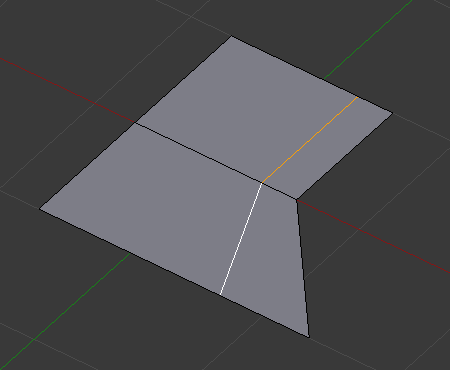
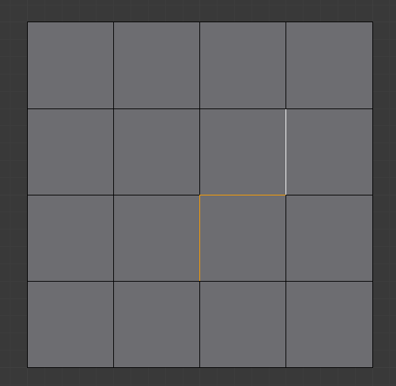
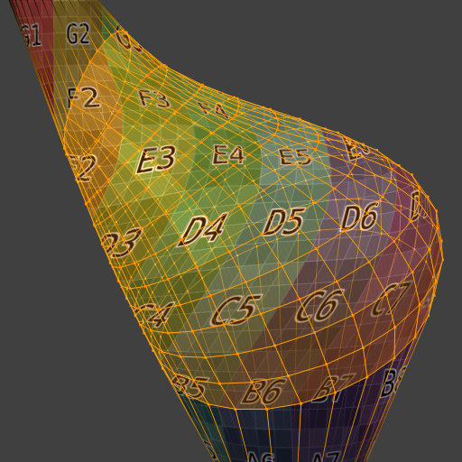

Інструменти Ребер -- Edge Tools¶
Орієнтир -- Reference
| Mode: | Edit Mode |
|---|---|
| Menu: | |
| Hotkey: | Ctrl-E |
Зробити Ребро/Грань -- Make Edge/Face¶
Орієнтир -- Reference
| Mode: | Edit Mode |
|---|---|
| Panel: | |
| Menu: | |
| Hotkey: | F |
Це створить ребро або деякі грані, залежно від вашого виділення.
Дивіться також тут -- Creating Geometry.
Установлення атрибутів ребер¶
Ребра можуть мати кілька різних атрибутів, що впливають на те, як певні інші інструменти впливають на сіть.
Позначити Шов -- Mark Seam та Зчистити Шов -- Clear Seam¶
Орієнтир -- Reference
| Mode: | Edit Mode |
|---|---|
| Menu: |
Шви -- це спосіб створення відокремлень, «островів» в картах, розкладках UV. Дивіться детальніше тут -- UV Mapping section. Ці оператори задають або вимикають цей стяг для виділених ребер.
Позначити Гостроту -- Mark Sharp та Зчистити Гостроту -- Clear Sharp¶
Орієнтир -- Reference
| Mode: | Edit Mode |
|---|---|
| Menu: |
Стяг Sharp використовується модифікатором «Розділ Ребром» -- Edge Split Modifier, який є частиною технік згладжування. Як і шви, це властивість ребер, і ці оператори вмикають або вимикають її для виділених ребер.
Коригування вагомості скосу¶
Орієнтир -- Reference
| Mode: | Edit Mode |
|---|---|
| Menu: |
This edge property, a value between (0.0 to 1.0), is used by the Bevel Modifier to control the bevel intensity of the edges. This operator enters an interactive mode (a bit like transform tools), where by moving the mouse (or typing a value with the keyboard) you can set the bevel weight of selected edges. If two or more edge are selected, this operator alters the average weight of the edges.
Xem thêm
Vertices also have a bevel weight which can be edited.
Складка на Ребрі -- Edge Crease¶
Орієнтир -- Reference
| Mode: | Edit Mode |
|---|---|
| Menu: | |
| Hotkey: | Shift-E |
Ця властивість ребра, значення між (0.0 до 1.0), використовується модифікатором «Підподіл Поверхні» -- Subdivision Surface Modifier для керування гостротою, різкістю ребер у підподіленій сіті. Це оператор входить в інтерактивний режим (дещо подібно до інструментів трансформування), де шляхом рухання миші (або уводу значення з клавіатури) ви можете задати (усереднене) значення складки на виділених ребрах. Від'ємне значення буде віднімати від фактичного значення складки, якщо таке наявне. Для зчищення властивості складки на ребрі уводьте значення -1.
Ковзання Ребра -- Edge Slide¶
Орієнтир -- Reference
| Mode: | Edit Mode |
|---|---|
| Panel: | |
| Menu: |
Ковзання одного або більше ребер по суміжних гранях з деякими обмеженнями задіює виділення ребер (тобто, таке виділення повинно визначати дійсну петлю, дивіться нижче).
- Рівно -- Even E
- Змушує петлю ребер відповідати формі сусідньої петлі ребер. Ви можете перевернути на протилежну вершину, використовуючи F. Використовуйте Alt-Wheel для зміни керування ребрами.
- Flipped F
- При активному режимі Even це перевертає між двома суміжними петлями ребер активну петлю ребер, яка повинна з ними узгоджуватися.
- Затиск -- Clamp Alt або C
- Перемикає затискання ковзання у межах розширу ребер.
- Фактор -- Factor
- Визначає величину здійсненого ковзання. Від'ємні значення відповідають ковзанням у напрямку однієї грані, тоді як додатні -- у напрямку іншої. Це також показується у заголовку 3D Огляду.
- Дзеркальне Редагування -- Mirror Editing
- Дозволяє вам поширювати цю операцію на симетричні елементи сіті (якщо такі присутні, у локальному напрямку X).
- Коригування UV -- Correct UVs
- Коригує відповідні координати UV, якщо такі існують, для запобігання спотворенням зображення.
Використання¶
Стандартно, позиція вершин на петлі ребер рухається як відсоток від відстані між їх оригінальною позицією та суміжною петлею ребер, незалежно від довжини ребер.

Selected edge loop. |

Repositioned edge loop. |
{kind=link}
Режим «Рівн
Режим Even утримує форму виділеної петлі ребер такою ж, як у суміжної з неї петлі ребер, а не ковзає з відсотком уздовж кожного перпендикулярного ребра.
У режимі Even цей засіб показує позицію уздовж довжини поточно виділеного ребра, яке позначається жовтим, від вершини, позначеної збільшеною червоною міткою. Пересування ковзальної петлі ребер обмежується цією довжиною. При русі вами мишею вказівник довжини у заголовку змінюється, показуючи, де уздовж довжини ребра ви знаходитися.
Для зміни керувального ребра, що визначає позицію петлі ребер, використовуйте Alt-Wheel для прокрутки до іншого ребра.

Even Mode enabled. |

Even Mode with Flip enabled. |
Рухання миші пересуває виділену петлю ребер у напрямку до або від стартової вершини, але лінія петлі буде рухатися тільки у межах довжини поточно обраного ребра, відповідаючи формі однієї з межових петель ребер.
Обмеження та обходи¶
Існують обмеження щодо типу виділення ребер для цієї операції. Хибними виділеннями є:
- Петля, що перетинає себе
- This means that the tool could not find any suitable faces that were adjacent to the selected edge(s). An example that shows this is selecting two edges that share the same face. A face cannot be adjacent to itself.
- Одночасно кілька петель ребер
- The selected edges are not in the same edge loop, which means they do not have a common edge. You can minimize this error by always selecting edges end-to-end or in a "chain". If you select multiple edges just make sure they are connected. This will decrease the possibility of getting looping errors.
- Граничне ребро
- Виділення одиничного ребра на одному з країв об'єкта. Петля ребер не може бути знайдена, оскільки тут є тільки одна грань. Пам'ятайте, що петлі ребер є петлями, що є відтинками двох або більше граней.
A general rule of thumb is that if multiple edges are selected they should be connected end-to-end such that they form a continuous chain. This is literally a general rule because you can still select edges in a chain that are invalid because some of the edges in the chain are in different edge loops.
Обернути Ребро -- Rotate Edge¶
Орієнтир -- Reference
| Mode: | Edit Mode |
|---|---|
| Menu: |
Rotating an edge clockwise (CW) or counter-clockwise (CCW) spins an edge between two faces around their vertices. This is very useful for restructuring a mesh's topology.
Цей інструмент працює на виділених ребрах або спільному ребрі між виділеними гранями.

Selected edge. |

Ребро, обернуте за ГС. |
Cảnh báo
To rotate an edge based on faces you must select adjacent face pairs, otherwise Blender notifies you with an error message, "Could not find any select edges that can be rotated". Using either Rotate Edge CW or Rotate Edge CCW will produce exactly the same results as if you had selected the common edge.
Розділ Ребром -- Edge Split¶
Орієнтир -- Reference
| Mode: | Edit Mode |
|---|---|
| Menu: |
Edge Split подібний до інструмента «Розрив» -- Rip. Коли виділено два або більше дотичні внутрішні ребра або граничне ребро та використано Edge Split, то створиться отвір, дірка, а виділені ребра здублюються для формування границі цього отвору.

Selected edges. |

Суміжна грань пересунута для викриття отвору, залишеного розділом. |
{kind=link}
Мостити Петлі Ребер -- Bridge Edge Loops¶
Орієнтир -- Reference
| Mode: | Edit Mode |
|---|---|
| Menu: |
Bridge Edge Loops з'єднують одночасно кілька петель ребер гранями між ними.
- З'єднання Петель -- Connect Loops
- Відкрита Петля -- Open Loop
- Петлі з'єднуються з відкритими кінцями.
- Закрита Петля -- Closed Loop
- Намагається з'єднати у кругову петлю (де старт і кінець об'єднані).
- Пари Петель -- Loop pairs
- З'єднує кожну пару однаковою кількістю петель окремо.
- Об'єднання -- Merge
- Об'єднує петлі ребер, а не створює нову грань.
- Фактор Об'єднання -- Merge Factor
- Which edge loop the edges are merged to, a value of 0.5 will merge at a half-way point.
- Закрут -- Twist
- Визначає, які вершини в обох петлях з'єднуються одна з одною.
- Кількість Поділів -- Number of Cuts
- Кількість проміжних петель ребер, використовуваних для мостіння відстані між двома петлями.
- Інтерполяція -- Interpolation
- Лінеарно -- Linear, Шлях Змішання -- Blend Path, Поверхня Змішання -- Blend Surface
- Згладженість -- Smoothness
- Згладженість для Blend Path та Blend Surface.
- Фактор Профілю -- Profile Factor
- Наскільки проміжні нові ребра звужено/розширено.
- Форма Профілю -- Profile Shape
- The shape of the new edges. See the proportional editing page for a description of each option.
Приклади¶
Простий приклад, що показує дві закриті петлі ребер.

Увід. |
{kind=link}
Приклад засобу Bridge між петлями ребер з різними кількостями вершин.

Увід. |

Bridge result. |
Приклад використання інструмента Bridge для вирізання отворів у виділеннях граней та з'єднання їх.

Увід. |

Bridge result. |
Приклад, що показує як засіб Bridge може виявляти одночасно кілька петель та з'єднувати їх за один крок.

Увід. |

Bridge result. |
Приклад опції підподілення та змішування поверхні з UV.

Увід. |

Bridge result. |
{kind=link}